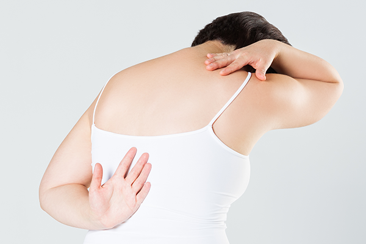
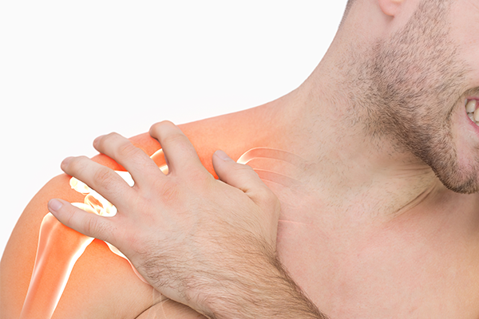

031-622-0700
병원소개
인사말
의료진 소개
둘러보기
척추관절클리닉
허리
어깨
목
무릎
손
발
팔꿈치
주요시술
C-ARM 특수신경치료
프롤로 치료
체외충격파 치료
초음파유도 치료
도수교정클리닉
도수교정 클리닉
대상포진클리닉
대상포진 클리닉
영양수액클리닉
영양수액 클리닉
진료안내
진료시간 및 상담전화
오시는 길
비급여항목
척추관절클리닉
허리
어깨
목
무릎
손
발
팔꿈치
어깨

오십견
오십견은 보통 50세 전후에 흔하다고 하여 오십견이라 불리지만,
최근 발병 연령층이 점점 낮아지고 있으며, 이삼십대 혹은 칠팔십대 등, 모든 연령층에서 나타나는 질환입니다.
어깨를 둘러싸고 있는 관절막에 염증이 나타나 두꺼워지면서 관절강내 공간이 줄어들게 되는 퇴행성 질환인 오십견은 팔을 사용하는 사용할 수 있는 범위가 제한되어 일상생활에 큰 지장을 줄 수 있습니다.
움직임이 많지 않은 겨울철과 야간에 통증이 심해집니다.
원인
어깨 관절의 노화나 퇴행성 변화
골절 또는 다른 어깨질환 때문에 오랜 기간 팔을 움직이지 않았을 때
회전근개파열이나 목디스크가 있는 경우
심혈관계 질환, 당뇨, 갑상선항진증을 앓고 있는 경우
증상
어깨 통증으로 잠을 자기 힘들고, 자다가 자주 깬다.
가만히 있을 때는 괜찮으나, 어깨나 팔을 움직일 때 아프다.
비가 오거나 추운 곳에 있을 때, 스트레스를 받을 때 통증이 심해진다.

석회성건염
석회성건염은 회전근의 힘줄부분에 하얀 가루모양의 돌이 발생하는 질환입니다.
주로 30~50대 사이에서 많이 발생하며 남성보다 여성에게 많이 발생하는 것으로 알려져 있습니다.
원인
어깨의 힘줄이 노화되거나, 이전에 힘줄 손상된 적 있는 경우
기존에 석회가 있는 상태에서 과도하게 사용한 경우
어깨뿐만 아니라 몸의 여러 곳에 석회가 잘 생기는 체질인 경우
증상
특별한 이유 없이, 하루이틀만에 통증이 갑자기 심해진다.
잠을 이루지 못할 만큼의 극심한 통증이 느껴진다.
어깨가 무겁게 느껴지고, 목과 팔 아래까지 통증이 느껴진다.
회전근개손상
회전근개손상은 어깨를 이루고 있는 4가지 근육(극상근, 극하근, 소원근, 견갑하근)을 무리하게 사용하거나 그 부분에 외부적인 충격으로 받아 힘줄이 찢어지는 질환입니다.
원인
퇴행성 변화
과도한 운동으로 인하여 힘줄에 염증이 발생한 경우
무거운 물건을 자주 드는 경우 또는 외부 충격
증상
물건을 제대로 들 수 없다.
손을 등뒤로 올릴 때 통증이 심해진다.
팔을 움직일 때 어깨에서 마찰음이 들린다.
밤에 통증이 더욱 심해진다.